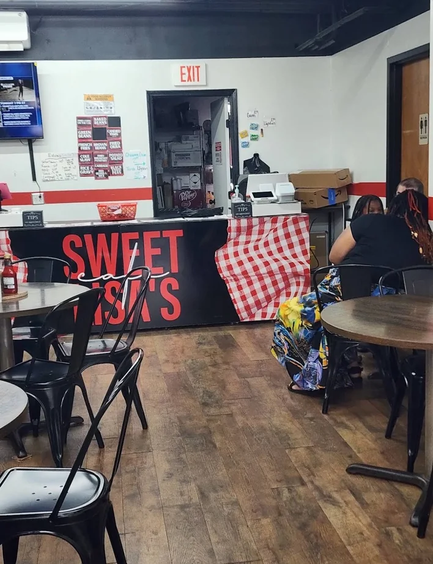

FROM THE NEIGHBORHOODGreenwood, Tulsa

01 / THE PEOPLE & THE PLACE
Pull up a chair.
You’re home.
Southern favorites and a warm welcome in the heart of Greenwood.
HOMESTYLE FAVORITESHISTORIC GREENWOODSOMETHING SWEET
DISCOVER WHAT’S COOKING